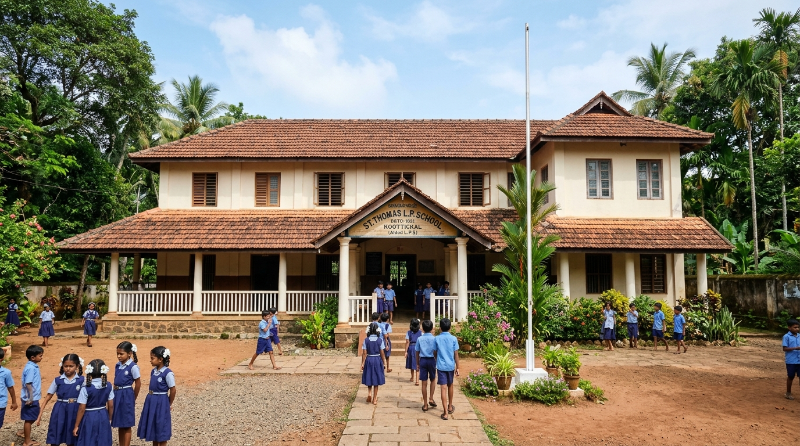
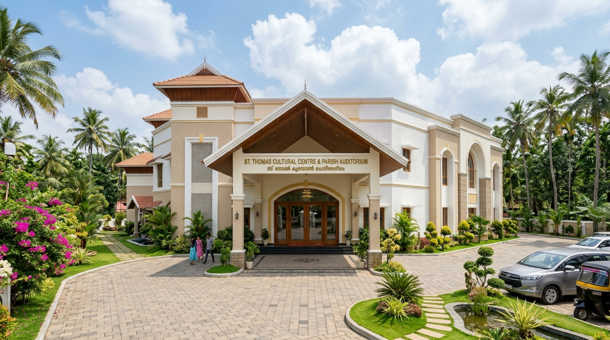

Parish Institutions & Facilities
Serving generations of families across Chempu through dedicated institutions, banquet venues, and civic enterprises.

Established in 1921 under the patronage and management of St. Thomas Church Chempu, this centenary educational institution has nurtured generations of children across Chempu and neighbouring villages with primary education, moral discipline, and values.

A spacious modern parish auditorium and cultural venue accommodating community gatherings, solemn wedding banquets, parish general assemblies, youth festivals, and cultural events for all residents of Chempu.

Situated in the heart of Chempu, the parish commercial shopping complex provides essential retail spaces, local businesses, and community utilities, contributing to village commerce and supporting church temporal ministries.
Consecrated Life & Filial Parish
The religious presence that enriches the spiritual and humanitarian fabric of Chempu.

Sisters of the Destitute (SD Convent, Chempu)
For over 75 dedicated years, the Sisters of the Destitute (SD) have been an integral spiritual pillar of St. Thomas Church Chempu. Formed in 1927 by Venerable Fr. Varghese Payyappilly with the charism of compassionate love for the poor and marginalized, the SD Sisters in Chempu tirelessly serve our parish community through nursery education (Carmel Nursery), Sunday catechism, home visitations of the sick and elderly, liturgical altar service, and continual Eucharistic adoration.

St. Mary's Church, Chemmanakary (Holyland)
Situated along the serene Chemmanakary backwaters, St. Mary's Church, Chemmanakary (Holyland) is a revered filial church and sacred pilgrimage center under the parental parish and pastoral care of St. Thomas Syro-Malabar Church, Chempu. Under the direct pastoral guidance of the Chempu parish vicar, the church ministers to the spiritual life of the Chemmanakary community with Holy Qurbana, Marian devotions, and the solemn celebration of its annual parish feast.
Pious Associations & Pastoral Wings
Active parish lay organizations fostering fellowship, spiritual enrichment, charity, and joyful service.
THIRUBALASAGHYAM
CLC
KCYM
SCYM
WOMENS WELFARE
ST. VINCENT DE PAUL SOCIETY
Parish Office & Facility Inquiries
For school admissions, Cultural Centre auditorium reservations, pastoral ministry participation, or general inquiries, please contact the St. Thomas Church Rectory.